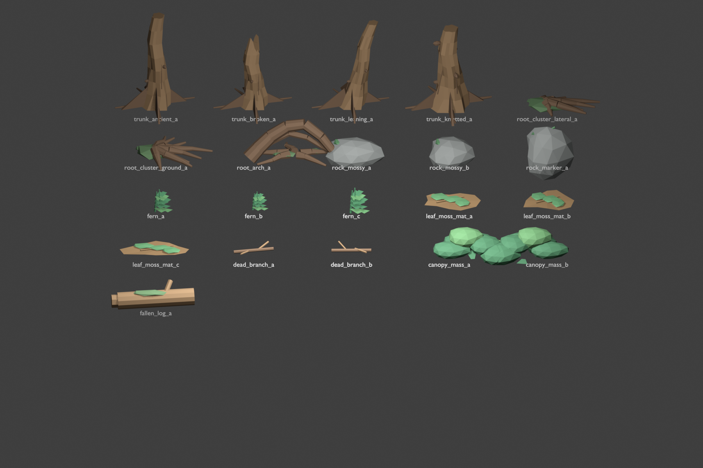

Kit Coverage
| Famille | Attendu | Present |
|---|---|---|
| Troncs irreguliers | 4 | 4 |
| Root clusters / arche | 3 | 3 |
| Rochers / pierres moussues | 3 | 3 |
| Fougeres / clumps vegetaux | 3 | 3 |
| Leaf / moss mats | 3 | 3 |
| Branches mortes | 2 | 2 |
| Masses de canopee stylisees | 2 | 2 |
| Fallen log | 1 | 1 |
Garde-fous de review
Cette capture est une preuve intermediaire. Elle ne valide pas le
corridor depuis la route camera et ne peut pas fermer un ticket visuel
comme Premium target.
La validation route-camera reste differee vers MYB-148 / MYB-150 / MYB-151 selon l'usage du kit.
Rework cible
| Priorite | Ce qui doit etre inspecte |
|---|---|
| P0 | Troncs: bases plus larges, asymetrie, racines, ridges, formes cassees, caractere ancien. |
| P0 | Root clusters: formes moins droites, courbure organique, contact au sol, root_arch_a plus scenic. |
| P1 | Fougeres et mats: silhouettes plus lisibles, bords organiques, moins d'effet plat. |
| P1 | Canopy masses: moins blob, plus de variation intentionnelle. |
| P2 | Rochers: asymetrie, placement mousse et identite ancienne subtile. |